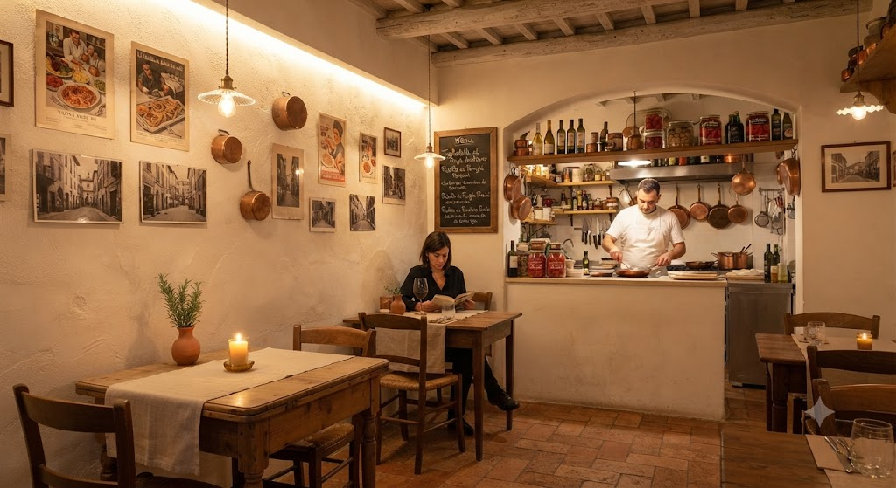
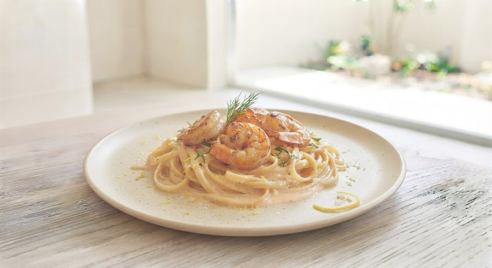

OUR STORY
30歳、居抜きの店から始まった物語
代表・金子智彦氏が30歳の時に開業したヴェルドゥーラ。空き物件として紹介された店舗を、 ほぼ居抜きのままスタートしました。地元・利府町の住宅街に根ざしながら、 いまでは「大人の隠れ家」として、わざわざ足を運ぶ人が絶えない一軒に育っています。
「知る人ぞ知る人気店」から、
あなたにとっての「行きつけ」へ。

香るゆず、ほどけるクリーム。
海老とキノコが彩る、
ヴェルドゥーラのごちそうパスタ。
Ristoranteヴェルドゥーラ
住宅街にひっそりと佇む、大人の隠れ家。地場野菜をふんだんに使った本格イタリアンと、 看板の大海老のクリームパスタを求めて、わざわざ訪れる人が絶えません。
ひと口で、やさしく満たされる。
大海老のゆずクリームパスタ
海老の旨みとゆずの香りが重なる、贅沢な一皿。地場野菜のおいしさを、もっと華やかに。 プリプリの大海老とキノコ、そしてゆずがふわりと広がる濃厚クリームソースは、 ヴェルドゥーラでしか出会えない自慢の逸品です。
SIGNATURE PASTA
利府で出会う、やさしく華やかな一皿。プリプリの大海老とキノコに、 ゆずの香りがふわりと重なる濃厚クリームソースをたっぷりと。 サービスエリアやホテルで料理長を務めたシェフが、素材の味を活かしながら 丁寧に仕上げています。地場野菜のコースと合わせて、ぜひ味わってください。
ランチ・ディナーの各コースでご用意。単品でのご相談もお気軽にどうぞ。 週末は満席になることが多いため、ご予約がおすすめです。
01
香りまでごちそう。ゆずがふわりと広がる、海老とキノコの濃厚クリームパスタ。
02
野菜のおいしさに、海老の贅沢を添えて。ヴェルドゥーラ自慢のゆずクリームパスタ。
03
地場野菜のおいしさを、もっと華やかに。プリプリ海老とキノコのゆずクリームパスタ。
地場野菜をふんだんに使った本格イタリアンと、隠れ家的な雰囲気。
ヴェルドゥーラだけの体験がここにあります。
宮城の地場産野菜をふんだんに取り入れたオリジナルイタリアン。看板メニューのペペロンチーノは6種のダシで作られ、冷めてもおいしいと評判です。
サービスエリアやホテルで料理長を務めた経歴を持つシェフが、本格イタリアンでありながら気軽に立ち寄れる価格帯とカジュアルさを両立させています。
住宅街の中、窓越しに公園が見えるこじんまりとした店内。静かに食事を楽しめる「知る人ぞ知る」大人の隠れ家として親しまれています。

代表・金子智彦氏が30歳の時に開業したヴェルドゥーラ。空き物件として紹介された店舗を、 ほぼ居抜きのままスタートしました。地元・利府町の住宅街に根ざしながら、 いまでは「大人の隠れ家」として、わざわざ足を運ぶ人が絶えない一軒に育っています。
「知る人ぞ知る人気店」から、
あなたにとっての「行きつけ」へ。
予約してランチを楽しみに伺いました。前菜はとても美味しく、素材の味がしっかり感じられました。 スタッフの方の案内も丁寧で、落ち着いた時間を過ごせました。
レモンコースにデザートを追加していただきました。野菜も使ったヘルシーで見た目にも美しいコース料理で、 前菜からメインまで丁寧に作られていて、どれも素材の味がしっかり感じられました。 特にとうもろこしとはちみつの冷製スープの甘みが優しく美味でした。
| 店名 | ヴェルドゥーラ（Ristorante Verdura） |
|---|---|
| 住所 | 〒981-0101 宮城県宮城郡利府町赤沼大貝93−1 |
| 電話番号 | 022-767-5070 |
| 代表者 | 赤羽 優子 |
| 営業 | ランチ営業中心 ディナーは金・土・日のみ、要予約制 |
| SNS | Instagram @ver__dura |